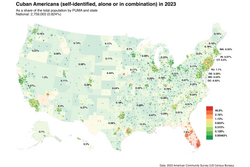
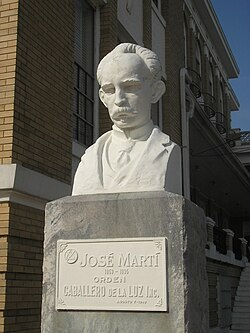
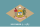
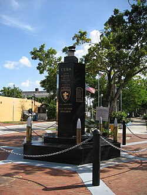
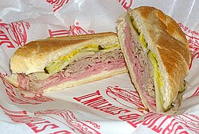

Cuban Americans
 | |
| Total population | |
|---|---|
| 3,082,802[1] ~0.9% of the U.S. population (2025)[1] | |
| Regions with significant populations | |
| Languages | |
| Spanish (Cuban Spanish) • English • Miami English • Cubonics • Spanglish • Lucumí | |
| Religion | |
| Predominantly: Roman Catholicism (49%) Minority: Protestantism (16%), irreligion (26%)[3] | |
| Related ethnic groups | |
| Part of a series on |
| Hispanic and Latino Americans |
|---|
Cuban Americans (Spanish: cubanoestadounidenses[4] or cubanoamericanos[5]) are Americans who trace their ancestry to Cuba. The word may refer to someone born in the U.S. of Cuban descent or to someone who has emigrated to the U.S. from Cuba. Cuban Americans are the third largest Hispanic American group in the United States.[1]
Many metropolitan areas throughout the United States have significant Cuban American populations.[6] Florida (1,621,352 in 2023) has the highest concentration of Cuban Americans in the United States. Over 1.2 million Cuban Americans reside in Miami-Dade County (home to 52 percent of all Cuban immigrants in the U.S.),[7] where they are the largest single ethnic group and constitute a majority of the population in many municipalities.[8][9][10][11]
Greater Miami has by far the highest concentration of Cuban Americans of any metropolitan area, with an estimate of 2 million individuals identifying as such. Along with Greater Miami and its surroundings, Tampa (200,621) and Jacksonville (up to 7,000) compose another substantial portion of the Cuban American population in the state of Florida.
As of 2024, the second state with the highest Cuban American population is Texas,[12] counting a number up to 140,000 individuals identifying as such.
About 60,000 and more reside in the Greater Houston[12] area, whereas some other 20,000 individuals can be found in the Dallas–Fort Worth metroplex, San Antonio and Austin areas altogether.
Next up, approximately a further 100,000 Cuban Americans reside in California, making it the third state per highest population in the country with over 70,000 individuals residing in the counties of Southern California, from the Greater Los Angeles area to San Diego.
Another 20,000 Cuban Americans in the state are concentrated in the San Francisco Bay Area and another 10,000 the counties of Central Valley, California altogether.
Up next is New Jersey followed by New York, hosting approximately 167,000 people altogether, followed by Nevada, with Clark County hosting nearly 50,000 Cuban Americans.
The states of Georgia, Kentucky,[13] and Illinois also host fast-growing communities of Cuban Americans.
Immigration
[edit]Early migrations
[edit]Before the Louisiana Purchase and the Adams–Onís Treaty of 1819, Spanish Florida and other possessions of Spain on the Gulf Coast west of the Mississippi River were provinces of the Captaincy General of Cuba. Consequently, Cuban immigration to regions that would eventually form the United States have a long history, beginning in the Spanish colonial period in 1565 when the settlement of St. Augustine was established by Pedro Menéndez de Avilés and hundreds of Spanish soldiers and their families moved from Cuba to St. Augustine to establish new lives.[14]
Thousands of Cuban settlers also immigrated to Louisiana between 1778 and 1802 and Texas during the period of Spanish rule.[citation needed] Since 1820, the Cuban presence was more than 1,000 people. In 1870 the number of Cuban immigrants increased to almost 12,000, of which about 4,500 resided in New York City, about 3,000 in New Orleans and 2,000 in Key West. The causes of these movements were both economic and political, which intensified after 1860, when political factors played the predominant role in emigration, as a result of deteriorating relations with the Spanish metropolis.[15]
1869 marked the beginning of one of the most significant periods of emigration from Cuba to the United States, again centered on Key West. The exodus of hundreds of workers and businessmen was linked to the manufacture of tobacco. The reasons are many: the introduction of more modern techniques of elaboration of snuff, the most direct access to its main market, the United States, the uncertainty about the future of the island, which had suffered years of economic, political and social unrest during the beginning of the Ten Years' War against Spanish rule. It was an exodus of skilled workers, precisely the class in the island that had succeeded in establishing a free labor sector amid a slave economy.[16]
Tampa was added to such efforts, with a strong migration of Cubans, which went from 720 inhabitants in 1880 to 5,532 in 1890. However, the second half of the 1890s marked the decline of the Cuban immigrant population, as an important part of it returned to the island to fight for independence. The War accentuated Cuban immigrant integration into American society, whose numbers were significant: more than 12,000 people.[17][18]

The population of Cuban Americans has experienced a surge in growth once again with the arrival of the 2021–23 Cuban migration wave to the United States, where Cubans were intercepted at the Southern border over 300,000 times.[19]
Key West and Tampa, Florida
[edit]In the mid- to late 19th century, several cigar manufacturers moved their operations to Key West to get away from growing laboral and political problems.[20] Many Cuban cigar workers followed. The Cuban government had even established a grammar school in Key West to help preserve Cuban culture. There, children learned folk songs and patriotic hymns such as "La Bayamesa", the Cuban national anthem.[21]
In 1885, Vicente Martinez Ybor moved his cigar operations from Key West to the town of Tampa to escape labor strife. Ybor City was designed as a modified company town, and it quickly attracted thousands of Cuban workers from Key West and Cuba with Spanish and Italian immigrant workers. West Tampa, another new cigar manufacturing community, was founded nearby in 1892 and also grew quickly. Between these communities, the Tampa Bay area's Cuban population grew from almost nothing to the largest in Florida in just over a decade, and the city as a whole grew from a village of approximately 1000 residents in 1885 to over 16,000 by 1900.[22]
Both Ybor City and West Tampa were instrumental in Cuba's eventual independence.[23] Inspired by revolutionaries such as Jose Martí, who visited Florida several times, Tampa-area Cubans and their sympathetic neighbors donated money, equipment, and sometimes their lives to the cause of Cuba Libre.[24] After the Spanish–American War, some Cubans returned to their native land, but many chose to stay in the U.S. due to the physical and economic devastation caused by years of fighting on the island.[25]
Other early waves (1900–1959)
[edit]Several other small waves of Cuban emigration to the U.S. occurred in the early-to-mid 20th century (1900–1959). Most settled in Florida and the northeast U.S. The majority of an estimated 100,000 Cubans arriving in that time period usually came for economic reasons (the Great Depression of 1929, volatile sugar prices and migrant farm labor contracts),[26] but included anti-Batista refugees fleeing the military dictatorship, which had pro-U.S. diplomatic ties. During the '20s and '30s, emigration from Cuba to U.S. territory, basically comprised workers looking for jobs, mainly in New York and New Jersey. They were classified as labor migrants and workers, much like other immigrants in the area at that time. Thus migrated more than 40,149 in the first decade, encouraged by U.S. immigration facilities at the time and more than 43,400 by the end of the 30s.[citation needed]
The Cuban population officially registered in the United States for 1958 was around 125,000 people including descendants. Of these, more than 50,000 remained in the United States after the revolution of 1959.[17]
Post-1959 revolution (since 1959)
[edit]After the Cuban revolution led by Fidel Castro in 1959, a Cuban exodus began as the new government allied itself with the Soviet Union and began to introduce communism. The first Cubans to come to America after the revolution were those affiliated with former dictator Fulgencio Batista, next were Cuba's professionals. Most Cuban Americans that arrived in the United States initially came from Cuba's educated upper and middle classes centered in Cuba's capital Havana. This middle class arose in the period after the Platt Amendment when Cuba became one of the most successful countries in Latin America. Between December 1960 and October 1962 more than 14,000 Cuban children arrived alone in the U.S. Their parents were afraid that their children were going to be sent to some Soviet bloc countries to be educated [citation needed] and they decided to send them to the States as soon as possible.[citation needed]
This program was called Operation Peter Pan (Operacion Pedro Pan). When the children arrived in Miami they were met by representatives of Catholic Charities and they were sent to live with relatives if they had any or were sent to foster homes, orphanages or boarding schools until their parents could leave Cuba. From 1965 to 1973, there was another wave of immigration known as the Freedom Flights. In order to provide aid to recently arrived Cuban immigrants, the United States Congress passed the Cuban Adjustment Act in 1966. The Cuban Refugee Program provided more than $1.3 billion of direct financial assistance. They also were eligible for public assistance, Medicare, free English courses, scholarships and low-interest college loans.[27]
Some banks pioneered loans for exiles who did not have collateral or credit but received help in getting a business loan. These loans enabled many Cuban Americans to secure funds and start up their own businesses. With their Cuban-owned businesses and low cost of living, Miami, Florida and Union City (dubbed "Havana on the Hudson")[28][29] were the preferred destinations for many immigrants and soon became the main centers for Cuban-American culture. According to author Lisandro Perez, Miami was not particularly attractive to Cubans prior to the 1960s.[30]
It was not until the exodus of the Cuban exiles in 1959 that Miami started to become a preferred destination. Westchester within Miami-Dade County, was the area most densely populated by Cubans and Cuban Americans in the United States, followed by Hialeah in second.[31]
Between 1960 to 1980, around 1 million Cubans emigrated, corresponding to 10% of the island's population, with 85% going to the US.[32]
Communities like Miami, Tampa and Union City, which Cuban Americans have made their home, have experienced a profound cultural impact as a result, as seen in such aspects of their local culture as cuisine, fashion, music, entertainment and cigar-making.[33][34]
1980s
[edit]Another large wave (an estimated 125,000 people) of Cuban immigration occurred in the early 1980s with the Mariel boatlifts. Most of the "Marielitos" were people wanting to escape from economic stagnation.[35]
Mid-1990s to 2000s
[edit]Since the mid-1990s, after the implementation of the "Wet feet, dry feet" policy immigration patterns changed. Many Cuban immigrants departed from the southern and western coasts of Cuba and arrived at the Yucatán Peninsula in Mexico; many landed on Isla Mujeres. From there Cuban immigrants traveled to the Texas-Mexico border and found asylum. Many of the Cubans who did not have family in Miami settled in Houston; this has caused Houston's Cuban-American community to increase in size. The term "dusty foot" refers to Cubans emigrating to the U.S. through Mexico. In 2005 the Department of Homeland Security had abandoned the approach of detaining every dry foot Cuban who crosses through Texas and began a policy allowing most Cubans to obtain immediate parole.[36]
Jorge Ferragut, a Cuban immigrant who founded Casa Cuba, an agency that assists Cuban immigrants arriving in Texas, said in a 2008 article that many Cuban immigrants of the first decade of the 21st century left due to economic instead of political issues.[37] By October 2008 Mexico and Cuba created an agreement to prevent immigration of Cubans through Mexico.[38][39]
In recent years,[when?] Puerto Rico has become a major drop-off point for Cubans trying to reach the United States illegally. As a U.S. Commonwealth, Puerto Rico is seen as a stepping stone for Cubans trying to get to the continental U.S., though Puerto Rico itself is home to a number of Cubans.[40]
Immigration policy
[edit]Before the 1980s, all refugees from Cuba were welcomed into the United States as political refugees. This changed in the 1990s so that only Cubans who reach U.S. soil are granted refuge under the "wet foot, dry foot policy". While representing a tightening of U.S. immigration policy, the wet foot, dry foot policy still afforded Cubans a privileged position relative to other immigrants to the U.S. until was removed by Democrat President Barack Obama during his second term. This privileged position is the source of a certain friction between Cuban Americans and other Latino citizens and residents in the United States, adding to the tension caused by the divergent foreign policy interests pursued by conservative Cuban Americans. Cuban immigration also continues with an allotted number of Cubans (20,000 per year) provided legal U.S. visas.[41]
According to a U.S. Census 1970 report, Cuban Americans were present in all fifty states. But as later Census reports demonstrated, the majority of Cuban immigrants settled in Miami-Dade County. Emigration from Cuba began to slow down in the late 1990s. Meanwhile, second-generation Cuban Americans increasingly moved out of urban enclaves like Little Havana and settled in suburban areas like Westchester, while those urban areas came to be inhabited by immigrants from other Latin American nations.[42]
In late 1999, U.S. news media focused on the case of Elián González, the six-year-old Cuban boy caught in a custody battle between his relatives in Miami and his father in Cuba. The boy's mother died trying to bring him to the United States. On April 22, 2000, immigration enforcement agents took Elián González into custody. González was returned to Cuba to live with his father.
On January 12, 2017, President Barack Obama announced the immediate cessation of the wet feet, dry feet policy.[43] The Cuban government agreed to accept the return of Cuban nationals.[44] Beginning with the United States–Cuban Thaw in 2014, anticipation of the end of the policy had led to increased numbers of Cuban immigrants.[45]
Demographics
[edit]In the census in 2022 there were 2,435,573 Cuban Americans, and in the 2010 census there were 1,785,547 (both native and foreign born), and represented 3.5% of all Latinos, and 0.58% of the US population. Of the 1,241,685 Cuban Americans, 983,147 were born abroad in Cuba and 628,331 were U.S. born. Of the 1.6 million, 415,212 were not U.S. citizens.[46] In the 2013 ACS, there were 2,013,155 Cuban Americans. The 2010 US Census shows that 85% of Cuban Americans self-identified as being white.[47] The most recent 2012 Cuban census has the island population at 64.12% white, 26.62% mulatto, 9.26% black, and 0.1% Asian.[48]
Ancestry
[edit]The ancestry of Cuban Americans includes Spanish and African peoples,[49] as well as the indigenous peoples of the Caribbean and those of Florida. During the 18th, 19th and early part of the 20th century, there were waves of Spanish immigration to Cuba (Castilians, Basques, Canarians, Catalans, Andalusians, Asturians and Galicians). Canarians immigrated to many countries along the Caribbean from Louisiana to Venezuela. But Cuba was the Latin American culture most influenced by the emigration of Canary Islanders (they developed the production of sugar in Cuba), and Cuban Spanish is closest to that of the Canary Islands. Canary Islanders were viewed by other Spanish-Cubans as superstitious but also hard-working. Some of Haiti's white population (French) migrated to Cuba after the Haitian War of Independence in the early 19th century. Also, minor but significant ethnic influx is derived from diverse peoples from Middle East places such as Lebanon and Palestine.[citation needed]
U.S. states with largest Cuban-American populations
[edit]| State or territory | Cuban-American population (2020 Census)[50][51] |
Percentage (2020) | 2010 census[52][53] | Percentage (2010)[note 1][10] |
|---|---|---|---|---|
| Alabama | 6,289 | 0.1% | 4,064 | 0.1% |
| Alaska | 1,105 | 0.1% | 927 | 0.1% |
| Arizona | 17,635 | 0.2% | 10,692 | 0.2% |
| Arkansas | 2,287 | 0.1% | 1,493 | 0.1% |
| California | 97,083 | 0.2% | 88,607 | 0.2% |
| Colorado | 13,260 | 0.1% | 6,253 | 0.1% |
| Connecticut | 10,486 | 0.3% | 9,490 | 0.3% |
 Delaware | 2,065 | 0.2% | 1,443 | 0.2% |
| District of Columbia | 2,620 | 0.3% | 1,789 | 0.3% |
| Florida | 1,455,289 | 6.7% | 1,213,438 | 6.5% |
| Georgia | 36,875 | 0.3% | 25,048 | 0.3% |
| Hawaii | 2,008 | 0.1% | 1,544 | 0.1% |
| Idaho | 1,345 | 0.1% | 825 | 0.1% |
| Illinois | 25,130 | 0.2% | 22,541 | 0.2% |
| Indiana | 6,940 | 0.1% | 4,042 | 0.1% |
| Iowa | 3,112 | 0.1% | 1,226 | 0.0% |
| Kansas | 4,174 | 0.1% | 2,723 | 0.1% |
| Kentucky | 21,269 | 0.4% | 16,824 | 0.2% |
| Louisiana | 15,340 | 0.3% | 10,330 | 0.2% |
| Maine | 1,312 | 0.1% | 783 | 0.1% |
| Maryland | 12,830 | 0.2% | 10,366 | 0.2% |
| Massachusetts | 14,024 | 0.2% | 11,306 | 0.2% |
| Michigan | 14,142 | 0.1% | 9,922 | 0.1% |
| Minnesota | 5,080 | 0.1% | 3,661 | 0.1% |
| Mississippi | 2,425 | 0.1% | 2,063 | 0.1% |
| Missouri | 7,620 | 0.1% | 4,979 | 0.1% |
| Montana | 769 | 0.1% | 421 | 0.0% |
| Nebraska | 6,331 | 0.2% | 2,152 | 0.1% |
| Nevada | 33,028 | 1.0% | 21,459 | 0.8% |
| New Hampshire | 1,912 | 0.1% | 1,349 | 0.1% |
| New Jersey | 83,471 | 0.9% | 83,362 | 0.9% |
| New Mexico | 5,351 | 0.2% | 4,298 | 0.2% |
| New York | 75,115 | 0.3% | 70,803 | 0.4% |
| North Carolina | 29,233 | 0.2% | 18,079 | 0.2% |
| North Dakota | 682 | 0.1% | 260 | 0.0% |
| Ohio | 10,895 | 0.1% | 7,523 | 0.0% |
| Oklahoma | 4,376 | 0.1% | 2,755 | 0.1% |
| Oregon | 7,770 | 0.1% | 4,923 | 0.1% |
| Pennsylvania | 23,324 | 0.2% | 17,930 | 0.1% |
| Rhode Island | 1,912 | 0.1% | 1,640 | 0.1% |
| South Carolina | 10,586 | 0.2% | 5,955 | 0.1% |
| South Dakota | 809 | 0.1% | 265 | 0.0% |
| Tennessee | 13,889 | 0.2% | 7,773 | 0.1% |
| Texas | 111,432 | 0.4% | 46,541 | 0.2% |
| Utah | 3,240 | 0.1% | 1,963 | 0.1% |
| Vermont | 721 | 0.1% | 510 | 0.1% |
| Virginia | 20,964 | 0.2% | 15,229 | 0.2% |
| Washington | 11,277 | 0.1% | 6,744 | 0.1% |
| West Virginia | 1,096 | 0.0% | 764 | 0.0% |
| Wisconsin | 5,436 | 0.1% | 3,696 | 0.1% |
| Wyoming | 411 | 0.0% | 275 | 0.0% |
| United States | 2,245,686 | 0.7% | 1,785,547 | 0.6% |
US metropolitan areas with largest Cuban populations
[edit]The largest populations of Cubans are situated in the following metropolitan areas (Source: Census 2023):[54]
- Miami-Fort Lauderdale-West Palm Beach, FL MSA – 1,560,875
- Tampa-St. Petersburg-Clearwater, FL MSA – 200,621
- New York-Northern New Jersey-Long Island, NY-NJ-PA-CT MSA – 165,233
- Orlando-Kissimmee-Sanford, FL MSA – 80,327
- Houston-Sugar Land-Baytown, TX MSA – 79,005
- Cape Coral-Fort Myers, FL MSA – 74,405
- Los Angeles-Long Beach-Santa Ana, CA MSA – 47,331
- Las Vegas-Paradise, NV MSA – 44,634
- Dallas-Fort Worth-Arlington, TX MSA – 35,896
- Naples, FL MSA – 34,535
- Jacksonville, FL MSA – 27,850
- Chicago-Joliet-Naperville, IL-IN-WI MSA – 25,522
- Louisville-Jefferson County, KY-IN MSA – 24,502
- Phoenix-Mesa-Chandler, AZ MSA – 20,384
- Atlanta-Sandy Springs-Marietta, GA MSA – 19,300
- Philadelphia-Camden-Wilmington, PA-NJ-DE-MD MSA – 17,097
- Washington-Arlington-Alexandria, DC-VA-MD-WV MSA – 16,527
- Charlotte-Concord-Gastonia, NC-SC MSA – 13,555
- Lakeland-Winter Haven, FL MSA – 13,538
- San Francisco-Oakland-Berkeley, CA MSA – 12,371
U.S. communities with high percentages of people of Cuban ancestry
[edit]The top 25 US communities with the highest percentage of people claiming Cuban ancestry are (all of which are in Florida while the top 22 are in Miami-Dade County):
- Hialeah, Florida 84.1%
- Westchester, Florida 81%
- Coral Terrace, Florida 79.7%
- West Miami, Florida 78.9%
- University Park, Florida 77.9%
- Olympia Heights, Florida 75.9%
- Hialeah Gardens, Florida 75.6%
- Tamiami, Florida 73.1%
- Medley, Florida 69.9%
- Sweetwater, Florida 68.5%
- Palm Springs North, Florida 67.2%
- Miami Lakes, Florida 65.2%
- Kendale Lakes, Florida 64.9%
- Fontainebleau, Florida 59.4%
- Miami, Florida 52%
- Miami Springs, Florida 45.5%
- Richmond West, Florida 44.4%
- Coral Gables, Florida 40.2%
- Virginia Gardens, Florida 39.1%
- South Miami Heights, Florida 38.70%
- Kendall, Florida 38%
- West Tampa, Florida 35%
- Miami Beach, Florida 32.5%
- Ybor City, Florida 30.2%
- Golden Gate, Florida 28.2%
U.S. communities with the most residents born in Cuba
[edit]For total 101 communities, see the reference given. Top 20 U.S. communities with the most residents born in Cuba are (all of which are located within the Miami Florida area):[55]
- Hialeah, Florida 64.5%
- Westchester, Florida 60.8%
- Coral Terrace, Florida 56.9%
- West Miami, Florida 56.5%
- South Westside, FL 54.3%[56]
- University Park, Florida 53.1%
- Hialeah Gardens, Florida 52.5%
- Medley, Florida 50%
- Tamiami, Florida 49.7%
- Olympia Heights, Florida 48.2%
- Sweetwater, Florida 48.2%
- Westwood Lakes, Florida 44.9%
- Sunset, Florida 38.7%
- Fontainebleau, Florida 38.3%
- North Westside, FL 36.4%[57]
- Miami, Florida 36.3%
- Miami Lakes, Florida 34.1%
- Palm Springs North, Florida 32.8%
- Kendale Lakes, Florida 32.7%
- Kendale Lakes-Lindgren Acres, FL 31.3%[58]
According to the Migration Policy Institute website for the 2020-2024 American Community Survey,[59] the total immigrant population from Cuba in the United States of America was 1,434,500.
Of that number, the top counties of residence were:
1) Miami-Dade, Florida - 682,700
2) Hillsborough, Florida - 74,100
3) Broward, Florida - 66,000
4) Palm Beach, Florida - 44,400
5) Harris, Texas - 40,900
6) Lee, Florida - 39,900
7) Clark, Nevada - 25,800
8) Jefferson, Kentucky - 20,400
9) Orange, California - 20,100
10) Hudson, New Jersey - 18,300
11) Collier, Florida - 17,700
12) Los Angeles, California - 12,900
13) Duval, Florida - 9,400
14) Pinellas, Florida - 9,100
15) Maricopa, Arizona - 9,000
According to the Migration Policy Institute website for the 2019-2023 American Community Survey, there were 1,358,100 immigrants from Cuba in the US,[60] the top counties of residence being:
- Miami-Dade, Florida – 671,600
- Hillsborough, Florida – 67,800
- Broward, Florida – 62,200
- Palm Beach, Florida – 40,500
- Lee, Florida – 35,600
- Harris, Texas – 31,900
- Clark, Nevada – 24,200
- Hudson, New Jersey – 19,200
- Orange, Florida – 18,500
- Collier, Florida – 17,800
- Jefferson, Kentucky –- 17,600
- Los Angeles, California – 14,300
- Pinellas, Florida – 9,100
- Duval, Florida – 8,400
- Polk, Florida – 7,800
According to the 2017-2021 American Community Survey,[61] there were 1,313,200 immigrants from Cuba in the US, the top counties of residence being:
- Miami-Dade, Florida – 683,800
- Hillsborough, Florida – 61,900
- Broward, Florida – 61,400
- Palm Beach, Florida – 37,000
- Lee, Florida – 29,000
- Harris, Texas –- 26,200
- Clark, Nevada – 21,700
- Collier, Florida – 20,400
- Orange, Florida – 19,800
- Hudson, New Jersey – 19,200
- Los Angeles, California – 16,200
- Jefferson, Kentucky – 11,900
- Duval, Florida – 7,700
- Pinellas, Florida – 7,600
- Union, New Jersey – 6,800
Culture
[edit]Assimilation
[edit]
Many Cuban Americans have assimilated themselves into the American culture, which includes Cuban influences.
Since the 1990s there has been a growth of new Cuban American communities in places like Louisville, Kentucky, the Research Triangle area of North Carolina,[62] Katy, Texas, and Downey, California; the latter city now has the second-highest percentage of Cubans and Cuban Americans in the Western United States at 1.96% of the population.[31]
Cuban Americans have been very successful in establishing businesses and developing political clout in Miami. Cuban Americans have also contributed to and participated in many areas of American life including academia, business, acting, politics, and literature.[63] [64]
In the last 15 years,[when?] due to the growth of interest around the world for genealogy, Cuban genealogy has become a major interest for Cuban Americans and a growing segment in the family research industry. This has complemented assimilation by preserving Cuban and colonial roots, while also adopting American culture and values.[65]
Religion
[edit]Cuban Americans are mostly Roman Catholic, but some Cubans practice syncretic religions (such as Santería or Ifá), which evolved from mixing the Catholic religion with the traditional African religion. There are also many Protestant (primarily Pentecostal) Cubans, with small numbers of syncretist, nonreligious or tiny communities of Jewish and Muslim Cuban Americans. The Protestant movement in Cuba started after the Spanish–American War when many Americans came to Cuba.
Language
[edit]Similar to the 67% of other Latinos, 69% of Cubans under 18 speak a language other than English at home. For Cubans over the age of 18, the percent speaking a language other than English at home climbs to 89%, which is higher than the 80% among other Latino groups.[66]
Only 12% of Cubans under the age of 18 speak English less than very well, which is much lower than the 20% among other Latino groups.[66] While roughly half of all Cuban-Americans indicate that they feel more proficient in Spanish, around 60% of all Cuban-Americans do speak English proficiently.[67] 36% of all Cuban-Americans consider themselves bilingual.[67] The choice of many Cuban-Americans to utilize Spanish in the home connects to the desire of Cuban-Americans to retain their ethnic heritage. While many Cuban-Americans are open to some assimilation into American culture, ultimately they still consider themselves a unique group of people who bear their own traditions and perspectives.[67]
Food and drink
[edit]
Cuban food is varied, though rice is a staple and commonly served at lunch and dinner. Other common dishes are arroz con pollo (chicken and rice), pan con bistec (steak sandwich), platanos maduros (sweet plantains), lechon asado (pork), yuca (cassava root), flan, batido de mamey (mamey milkshake), papayas and guava paste.
A common lunch staple is the Cuban sandwich (sometimes called a mixto sandwich), which is built on Cuban bread and was created and standardized among cigar workers who traveled between Cuba and Florida (especially Ybor City) around the turn of the 20th century.[68][69][70]
Cuban versions of pizza contain bread, which is usually soft, and cheese, toppings, and sauce, which is made with spices such as Adobo and Goya onion. Picadillo, ground beef that has been sautéed with tomato, green peppers, green olives, and garlic is another popular Cuban dish. It can be served with black beans and rice, and a side of deep-fried, ripened plantains.
Beverages
[edit]Cuban coffee is popular in the Cuban-American community. Cubans often drink cafe cubano: a small cup of coffee called a cafecito (or a colada), which is traditional espresso coffee, sweetened with sugar, with a little foam on top called espumita. It is also popular to add milk, which is called a cortadito for a small cup or a cafe con leche for a larger cup. Also, a cortadito is 50% milk and 50% coffee, while a cafe con leche has more milk than coffee (about 75% to 25%)[71]
A common soft drink is Materva, a Cuban soda made of yerba mate. Jupiña, Ironbeer and Cawy lemon-lime are soft drinks that originated in Cuba. Since the Castro era, they are also produced in Miami. Other famous Cuban drinks include guarapo de caña.
A popular drink of Cuban origin is the Cuba Libre, a mix of Cuban rum and cola, usually Coca-Cola and mojitos.
Politics
[edit]
Cuban Americans have tended to be more Republican than Democratic, thanks to the anti-communist foreign policy platform of the Republican Party since the 1950s. The failed Bay of Pigs invasion left many Cubans distrustful of the Democratic Party, blaming John F. Kennedy for his handling of the 1961 Bay of Pigs Invasion.[72] Cuban exiles began an alliance with the Republican Party of Florida. In Florida, Cuban-American congressmen have tended to be Republican, beginning with Representative Ileana Ros-Lehtinen (Joe Garcia, a Democrat, is an exception). The presence of Cubans in the Republican Party was highlighted by the 2016 presidential race, which featured U.S. Senators Ted Cruz and Marco Rubio as prominent candidates, both of whom are of Cuban descent. But in New Jersey, another state with many Cuban Americans, Cuban-American congressmen have tended to be Democrats, for example, Representative Albio Sires and Senator Bob Menendez. Ronald Reagan is particularly popular in the Cuban-American community for standing up to Soviet communism and Fidel Castro's so-called "exportation of revolution" to Central America and Africa (there is a street in Miami named for Reagan),[73][74][75] and George W. Bush received 75 and 78 percent (in 2000 and 2004 respectively) of the Cuban-American vote. The Cuban-American lobby has also lobbied both parties on causes important to Cuban Americans.
Since the dissolution of the Soviet Union and the death of Fidel Castro, the Cuban-American vote has become more contested between the parties. In the 2008 United States presidential election, Democrat Barack Obama received 47% of the Cuban-American vote in Florida.[76] According to Bendixen's exit polls, 84% of Miami-Dade Cuban-American voters 65 or older backed John McCain, while 55% of those 29 or younger backed Obama.[77] In 2012, Barack Obama received 49 percent of the Cuban-American vote in Florida, compared to 47 percent for Mitt Romney according to Edison Research exits polls.[78] By spring 2014, this trend increased among Cuban American voters having a preference for Democratic Party candidates increased particularly for younger voters aged 18–49, increasing to some 56% for the younger voter demographic, versus Cuban-American voters over 50 years of age having a 39% preference for Democratic candidates.[79] As in the 2012 United States presidential election, Mitt Romney got more support than Barack Obama.[citation needed] The 2016 United States presidential election saw Donald Trump garner about the same level support within the community, garnering 50–54 percent of the Floridian Cuban-American vote, as opposed to 41–48 percent for Hillary Clinton, as some Cuban Americans were dissatisfied with Obama's Cuba policy, which restored foreign relations with the Cuban government.[80][81]
In regards to the 2020 United States presidential election in Florida, Trump increased his level of support with younger Cuban Americans.[82] In the aftermath of Trump attempting to overturn the election and the subsequent storming of the U.S. Capitol on January 6, 2021, a report by Foreign Policy alleged that Cuban Americans within Miami were among the most ardent believers of his conspiracy theories.[83] Cuban-Americans were the 2nd largest ethnic minority group to have been arrested for the Jan 6, 2021 Capitol riot behind Filipino Americans.[83]
By the 2024 United States presidential election, support for Donald Trump among Cuban-American voters reached historical highs. According to Florida International University's (FIU) 2024 Cuba Poll, 68% of likely Cuban-American voters in Miami-Dade County supported Trump over Democratic nominee Kamala Harris, marking the highest recorded level of approval for Trump in the survey's history. This shift was heavily reinforced by strong support for hardline policies toward Havana; 55% of South Florida Cuban Americans favored continuing the United States embargo against Cuba and isolating the Cuban government, which is a core element of Trump's "maximum pressure" foreign policy stance, even as a majority acknowledged the embargo's economic toll. Researchers noted that while younger, U.S.-born Cuban Americans remained more politically divided, the community broadly aligned with the Republican Party's hardline approach over Obama-era diplomatic engagement.[84][85]
Socioeconomics
[edit]The median household income for U.S.-born Cuban Americans is $57,000, higher than the overall U.S. median household income of $52,000.[86]
However, the median annual personal earnings for foreign born Cuban Americans is $25,000, which is lower than that of US population at $30,000.[86] Around 20% of Cuban-Americans live in poverty, compared to 25% of Latinos generally and 16% of non-Hispanic Americans.[67] The ability of the average Cuban-American to out-earn the average Latino makes it easier for Cuban-Americans to avoid poverty.[67] Historically, Cuban-Americans have also enjoyed greater benefits due to their "refugee" status within U.S. immigration policy.[67] These benefits, such as those provided by the Cuban American Act of 1966, have allowed Cuban-Americans to enjoy an easier time of navigating economic obstacles.[67]
Education
[edit]Among U.S.-born Cuban Americans, 36% have a college degree or higher, compared to 30% for the overall U.S. population. Of foreign-born Cuban Americans, 27% have a college degree. This is higher than the U.S. Latino population (14%) but lower than that of the overall U.S. population.[86] According to the Pew Research Center, Cuban-Americans 25 or older who emigrated to the United States after 1990 have the highest graduation rate, at 26%.[87] According to this same data, Cuban-Americans 25 or older who entered the United States before 1980 had a graduation rate of 24%, while those entering between 1980 and 1990 had a graduation rate of 13%.[87] The decline in graduation rate from 1980 to 1990 can in part be attributed to the presence of Afro-Cubans among immigrants, who generally favor more poorly in multiple areas due to systemic inequalities in Cuba.[67]
| Part of a series on |
| Hispanic and Latino Americans |
|---|
Notable Cuban Americans
[edit]In the United States Congress
[edit]Ten Cuban Americans currently serve in the United States Congress. There have been eleven Cuban-American US representatives elected from Florida, two from New Jersey and New York, and one each from Texas, Ohio and West Virginia.
- Marco Rubio, U.S. Secretary of State (since 2025)
- Ted Cruz, U.S. Senator from Texas (since 2013)
- Maria Elvira Salazar, Congresswoman from Florida's 27th Congressional District (since 2021)
 Carlos A. Giménez, Congressman from Florida's 26th Congressional District (since 2021)
Carlos A. Giménez, Congressman from Florida's 26th Congressional District (since 2021)- Albio Sires, Congressman from New Jersey's 13th Congressional District (2006–2013), and 8th Congressional District (2013-2023)

One United States Secretary of State:
- Marco Rubio, Republican, Florida, (since 2025), senator (2011–2025)
- Ted Cruz, Republican, Texas (since 2013)
Seven are United States Representatives:
- Mario Díaz-Balart, Republican, Florida's 21st congressional district (2011–2013), and Florida's 25th congressional district (2003–2011) (since 2013)
- Alex Mooney, Republican, West Virginia's 2nd district (since 2015)
- Maria Elvira Salazar, Republican, Congresswoman from Florida's 27th Congressional District (2021–present)
- Carlos A. Giménez, Republican, Congressman from Florida's 26th Congressional District (2021–present)
- Nicole Malliotakis, Republican, Congresswoman from New York's 11th Congressional District (2021–present)
- Maxwell Frost, Democrat, Congressman from Florida's 10th Congressional District (2023–present)
- Rob Menendez, Democrat, Congressman from New Jersey's 8th Congressional District (2023–present)
Former Congressmen:
- Carlos Curbelo, Republican, Florida's 26th district (2015–2019)
- Lincoln Díaz-Balart, Republican, Miami, U.S. House of Representatives (1993–2011)
- Joe Garcia, Democrat, Florida's 26th congressional district (2013–2015)
- Mel Martínez, Republican, U.S. Senator from Florida (2005–2009)
- David Rivera, Republican, Miami, U.S. House of Representatives (2011–2013)
- Ileana Ros-Lehtinen, Republican, Florida's 27th congressional district (1989–2019), first Cuban-American elected to Congress
- Anthony Gonzalez, Republican, Ohio's 16th District (2019–2023)[88]
- Albio Sires, Democrat, New Jersey's 13th congressional district (2006–2013), and New Jersey's 8th congressional district (2013–2023)
- Bob Menendez, Democrat, New Jersey (2006–2024), Member of the U.S. House of Representatives from New Jersey's 13th district (1993–2006)
In state government
[edit]Cuban Americans have had much success at the state level. In Florida, where Cuban-American legislators hold more seats than anywhere else in the nation, pro-democracy, anti-Castro, and anti-Chavez legislation is often promoted and passed even though states cannot dictate foreign policy. Even in states where Cuban Americans are not concentrated in large numbers they have had successes especially in New Jersey, where albeit a tiny minority concentrated in Union City, Elizabeth, and Newark, they have had enormous political successes.[89]
- Lieutenant Governor of Florida Carlos Lopez-Cantera (2014–2019)
- Lieutenant Governor of Florida Jeanette Núñez (2019-2025)

- Florida Supreme Court Justice John Couriel (since 2020)
- Florida State Senator Ana Maria Rodriguez (since 2020)

In Florida:
- Frank Artiles, Republican, former Member of the Florida House of Representatives from the 118th district
- José Félix Díaz, Republican, former Member of the Florida House of Representatives from the 116th district
- Manny Díaz, Jr., Republican, Member of the Florida House of Representatives from the 103rd district
- Miguel Díaz de la Portilla, former Republican, Member of the Florida Senate from the 40th district
- Anitere Flores, Republican, former Member of the Florida Senate from the 37th district
- Erik Fresen, Republican, Member of the Florida House of Representatives from the 114th district
- Ileana Garcia, Republican, Member of the Florida Senate from the 37th district (since 2020)
- René García, Republican, Member of the Florida Senate from the 38th district
- Eduardo Gonzalez, Republican, Member of the Florida House of Representatives from the 111th
- Carlos Lopez-Cantera, Republican, former Lieutenant Governor of Florida, (2014–2019)
- Jeanette Núñez, Republican, former Lieutenant Governor of Florida (2019-2025), Former Member of the Florida House of Representatives from the 119th district
- José R. Oliva, Republican, Member of the Florida House of Representatives from the 110th district
- Ana Maria Rodriguez, Republican, Member of the Florida Senate from the 39th district (since 2020)
- José Javier Rodríguez, Democrat, Member of the Florida Senate from the 37th district (2016–2020), House of Representatives from the 112th district (2012–2016)
- Mike La Rosa, Republican, Member of the Florida House of Representatives from the 42nd district
- Carlos Trujillo, Republican, Member of the Florida House of Representatives from the 105th district
In Maryland:
In New Hampshire:
- John H. Sununu, Republican, Governor of New Hampshire, (1983–1989)
- Christopher T. Sununu, Republican, Governor of New Hampshire, (2017–2025)
In New Jersey:
- Marlene Caride, Democrat, New Jersey
- Carmelo Garcia, Democrat, New Jersey
- Angelica Jimenez, Democrat, Member of the New Jersey General Assembly from the 32nd Legislative District (since 2012)
- Vincent Prieto, Democrat, Speaker of the New Jersey General Assembly (since 2014), Member of the New Jersey General Assembly from the 32nd Legislative District (since 2004)
In New York:
- Nicole Malliotakis, Republican, Staten Island, Member of the New York General Assembly from the 64th district
In Connecticut:
- Art Linares, Republican, Westbrook, Member of the Connecticut State Senate from the 33rd district
In Nevada:
- Moises "Mo" Denis, Democrat, Member of the Nevada Senate from the 2nd district
In Virginia:
- Jason Miyares, Republican, Virginia Beach, Member of the Virginia House of Delegates from the 82nd district and Attorney General of Virginia (since 2022)
Eduardo Aguirre (R) served as Vice Chairman of the Export-Import Bank of the United States in the George W. Bush administration and later named Director of Immigration and Naturalization Services under the Department of Homeland Security. In 2006, Eduardo Aguirre was named US ambassador to Spain. Cuban Americans have also served other high-profile government jobs including White House Chief of Staff John H. Sununu (R) Mauricio Claver-Carone serves as the President of the Inter-American Development Bank.
Florida-based businessman and Cuban exile Elviro Sanchez made his multimillion-dollar fortune by investing the proceeds of his family's fruit plantations. He is one of the most low-profile philanthropists in the Southern States.
Judicial positions:
- Danny Boggs is a judge on the United States Court of Appeals for the Sixth Circuit (since 1986)
- Barbara Lagoa is currently a judge on the United States Court of Appeals for the Eleventh Circuit (since 2019)
- Jorge Labarga is currently a judge on the Florida Supreme Court (since 2009)
- John D. Couriel is currently a judge on the Florida Supreme Court (since 2020)
- Raoul G. Cantero, III, served as a justice on the Florida Supreme Court. (2002–2008)
Notable people
[edit]Television and entertainment
[edit]Singers, songwriters and musicians
[edit]


.jpg){kind=link}


.jpg){kind=link}


,_Duchess_of_Manchester.jpg){kind=link}


.jpg){kind=link}


.jpg){kind=link}
.jpg){kind=link}


.jpg){kind=link}


.png){kind=link}

.jpg){kind=link}
.jpg){kind=link}


_(5106185121).jpg){kind=link}
.jpg){kind=link}


Athletes
[edit]


.jpg){kind=link}

_LCCN2014709351_(cropped).jpg){kind=link}


.jpg){kind=link}


_(29236398233).jpg){kind=link}


See also
[edit]
- Floridanos
- Cubans in Florida
- Afro-Cubans
- Canarian people
- Caribbean Americans
- Chinese Cubans
- Ciboney
- Cuban-American lobby
- Cuban exile
- Cuban Canadians
- Cuban immigration to the United States
- Cubans
- Cubans in Miami
- CubaOne Foundation
- Cuba–United States relations
- El Bloqueo
- Filipino Cubans
- Guanahatabey
- Haitian Americans
- Haitian Cubans
- History of Cuban Americans
- History of Ybor City
- Isleños
- List of Cuban Americans
- Mayaimi
- Nationalities and regions of Spain
- Spanish immigration to Cuba
- Taíno
- Tequesta
General:
Notes
[edit]- ↑ Percentage of the state population that identifies itself as Cuban relative to the state/territory" population as a whole.
References
[edit]- Jump up to: 1 2 3 "B03001 HISPANIC OR LATINO ORIGIN BY SPECIFIC ORIGIN - United States - 2022 American Community Survey 1-Year Estimates". U.S. Census Bureau. July 1, 2023. Retrieved January 3, 2024.
- ↑ "Cuban Immigrants in the United States". September 6, 2023.
- ↑ Krogstad, Jens Manuel (May 27, 2014). "Mexicans, Dominicans are more Catholic than most other Hispanics".
- ↑ "Comunidad cubano-estadounidense pide la aplicación total de ley Helms-Burton".
- ↑ "Cubanoamericano López-Cantera es el nuevo vicegobernador de Florida". ElNuevoHerald.com. Retrieved August 26, 2017.
- ↑ Cuban Ancestry Maps Archived November 22, 2012, at the Wayback Machine, epodunk.com, accessed March 31, 2011.
- ↑ Batalova, Jeanne Batalova Jiaxin Wei and Jeanne (September 6, 2023). "Cuban Immigrants in the United States". migrationpolicy.org. Retrieved March 19, 2025.
- ↑ "Explore Census Data". data.census.gov.[full citation needed]
- ↑ "Cuban-Americans: Politics, culture and shifting demographics". Journalists Resource. December 18, 2014. Archived from the original on March 20, 2015. Retrieved June 5, 2015.
- Jump up to: 1 2 "Hispanic or Latino by Type: 2010 Census Summary File 1". factfinder.census.gov. 2010. Archived from the original on December 18, 2014. Retrieved June 5, 2015.
- ↑ Sono Shah; Mohamad Moslimani; Luis Noe-Bustamante (August 16, 2023). "Facts on Hispanics of Cuban origin in the United States, 2021". Pew Research Center. Retrieved March 19, 2025.
- Jump up to: 1 2 "Record numbers of Cuban immigrants are choosing to make Houston their home". December 28, 2023.
- ↑ "Louisville magazine represents the heart of Cuban community in Kentucky". whas11.com. October 3, 2024. Retrieved October 4, 2024.
- ↑ Minahan, James B. (March 14, 2013). Ethnic Groups of the Americas: An Encyclopedia. Bloomsbury Publishing USA. ISBN 9798216081357 – via Google Books.
- ↑ Barkan, Elliott Robert (January 17, 2013). Immigrants in American History [4 volumes]: Arrival, Adaptation, and Integration [4 volumes]. Bloomsbury Publishing USA. ISBN 9781598842203 – via Google Books.
- ↑ Cortés, Carlos E. (August 15, 2013). Multicultural America: A Multimedia Encyclopedia. SAGE Publications. ISBN 9781452276267 – via Google Books.
- Jump up to: 1 2 "LA EMIGRACION CUBANA HACIA ESTADOS UNIDOS a LA LUZ DE SU POLITICA INMIGRATORIA. (Fragmento)". Retrieved September 6, 2012.
{{cite web}}: CS1 maint: deprecated archival service (link) Cuba vs Bloqueo (In Spanish). Posted by Dr. Antonio Aja Díaz – CEMI (Centro de Estudios de la Migración Internacional- Center for the Study of International Migration), July 2000. - ↑ Poyo, Gerald E. (1991). "The Cuban Experience in the United States, 1865–1940: Migration, Community, and Identity". Cuban Studies. 21: 19–36. ISSN 0361-4441.
- ↑ "Article: Cuban Immigrants in the United States | migrationpolicy.org". September 6, 2023.
- ↑ "Shifting from Cuba, cigar industry reached from Key West to Tampa". Sarasota Herald-Tribune.[permanent dead link]
- ↑ Barkan, Elliott Robert (January 17, 2013). Immigrants in American History. Bloomsbury Publishing USA. ISBN 978-1-59884-220-3.
- ↑ Engfer, Lee (January 1, 2005). Cubans in America. Lerner Publications. ISBN 9780822548706 – via Google Books.
- ↑ Westfall, Loy G. (2000). Tampa Bay: Cradle of Cuban Liberty. Key West Cigar City USA. ISBN 978-0-9668948-2-0.
- ↑ "Ybor City: Cigar Capital of the World-Reading 3". Nps.gov. Archived from the original on July 17, 2007. Retrieved August 8, 2010.
- ↑ Lastra, Frank (2006). Ybor City: The Making of a Landmark Town. University of Tampa Press. ISBN 978-1-59732-003-0.
- ↑ "Hispanic Americans - Cubans | Britannica". www.britannica.com.
- ↑ "Pedro Pan: A children's exodus from Cuba". July 11, 2017.
- ↑ Gettleman, Jeffrey (February 5, 2006). "On Politics; A Cuban Revolution, Only It's in New Jersey". The New York Times.
- ↑ Bartlett, Kay. "Little Havana on the Hudson", Pittsburgh Post-Gazette, June 28, 1977. Archived at Google News, accessed March 31, 2011.
- ↑ Grenier, Guillermo J. Miami Now!: Immigration, Ethnicity, and Social Change. Archived at Google Books. Retrieved March 31, 2011.
- Jump up to: 1 2 "Ancestry Map of Cuban Communities". Epodunk.com. Archived from the original on November 22, 2012. Retrieved December 23, 2007.
- ↑ Levine, Robert M.; Asís (oaut.), Moisés (2000). Cuban Miami. Rutgers University Press. ISBN 978-0-8135-2780-2.
- ↑ Martin, Lydia (August 9, 1995). "Cuban cool" The Star-Ledger, pp. 41 and 54.
- ↑ Juri, Carmen (August 9, 1995). "Jersey's Cuban flavors" The Star-Ledger, pp. 41 and 54.
- ↑ "Fidel Castro announces Mariel Boatlift, allowing Cubans to emigrate to U.S." November 24, 2009.
- ↑ Russell Cobb and Paul Knight. "Immigration: Cubans Enter U.S. at Texas-Mexico Border", Houston Press, January 9, 2008.
- ↑ "Immigration: Cubans Enter U.S. at Texas-Mexico Border". Houston Press.
- ↑ Knight, Paul. "Cuba, Mexico Look To Block The Texas Entrance To The U.S.", Houston Press, October 20, 2008.
- ↑ Olsen, Alexandra. "Cuba: Mexico to fight illegal migration to US", Associated Press via The Monitor, October 20, 2008.
- ↑ "Cubans using Haitian, Dominican soil to reach Puerto Rico concerns the U.S." dominicantoday.com. August 8, 2006. Archived from the original on December 22, 2014. Retrieved April 20, 2007.
- ↑ "Taking Action to Reflect Current Reality: Obama Administration Ends "Wet Foot, Dry Foot" Policies on Cuban Migration". January 13, 2017.
- ↑ "American FactFinder - Results". factfinder.census.gov. Archived from the original on February 1, 2017. Retrieved March 2, 2017.
- ↑ Obama (January 12, 2017). "Statement by the President on Cuban Immigration Policy". whitehouse.gov. Retrieved January 12, 2017 – via National Archives.
- ↑ Whitefield, Mimi (January 12, 2017). "Obama ending 'wet foot, dry foot' Cuban immigration policy". Miami Herald. Archived from the original on January 13, 2017.
- ↑ Gomez, Alan (January 12, 2017). "Obama to end 'wet foot, dry foot' policy for Cubans". USA Today.
- ↑ "United States - Selected Population Profile in the United States (Cuban)". November 26, 2011.
{{cite web}}: CS1 maint: deprecated archival service (link) - ↑ Sharon R. Ennis; Merarys Ríos-Vargas; Nora G. Albert (May 2011). "The Hispanic Population: 2010" (PDF). U.S. Census Bureau. p. 14 (Table 6). Retrieved July 11, 2011.
- ↑ "Tabla II.4 Población por sexo y zona de residencia según grupos de edades y color de la piel" [Table II.4 Population by sex and area of residence according to age groups and skin colour] (PDF) (in Spanish). National Office of Statistics and Information, Republic of Cuba. Archived from the original (PDF) on June 3, 2014. Retrieved October 3, 2014.
- ↑ "The World Factbook". cia.gov. Archived from the original on January 10, 2021. Retrieved June 5, 2015.
- ↑ "Detailed Races and Ethnicities in the United States and Puerto Rico: 2020 Census". Census.gov.
- ↑ "Explore Census Data". data.census.gov.[full citation needed]
- ↑ "2010 Census". Medgar Evers College. Archived from the original on October 29, 2009. Retrieved April 13, 2010.
- ↑ US Census Bureau: Table QT-P10 Hispanic or Latino by Type: 2010 Archived December 18, 2014, at the Wayback Machine retrieved January 22, 2012 – select state from drop-down menu
- ↑ "Explore Census Data".[full citation needed]
- ↑ "Top 101 cities with the most residents born in Cuba (population 500+)". city-data.com. Retrieved July 14, 2008.
- ↑ "South Westside, Florida (FL 33165) profile: population, maps, real estate, averages, homes, statistics, relocation, travel, jobs, hospitals, schools, crime, moving, houses, news, sex offenders". www.city-data.com. Retrieved August 26, 2017.
- ↑ "North Westside, Florida (FL 33178) profile". City-data.com. Retrieved August 26, 2017.
- ↑ "Kendale Lakes-Lindgren Acres, Florida (FL 33183) profile". City-data.com. Retrieved August 26, 2017.
- ↑ "U.S. Immigrant Population by State and County". migrationpolicy.org. February 4, 2014. Retrieved April 3, 2026.
- ↑ "U.S. Immigrant Population by State and County". migrationpolicy.org. February 4, 2014. Retrieved April 11, 2021.
- ↑ "U.S. Immigrant Population by State and County". migrationpolicy.org. February 4, 2014. Retrieved January 16, 2023.
- ↑ Matt Saldaña, "Raleigh's Cuban community: Their stories, their views on Obama's new diplomacy" Archived June 17, 2011, at the Wayback Machine, Indy Week.
- ↑ "15 Famous Cuban-Americans". Time. December 17, 2014. Retrieved October 29, 2017.
- ↑ "Ancestry in the United States". StatisticalAtlas.com. April 28, 2015. Retrieved April 3, 2017.
- ↑ "The Cuba Connection". Articles.Sun-Sentinel.com. January 10, 2007. Archived from the original on August 1, 2017. Retrieved August 26, 2017.
- Jump up to: 1 2 Sonya Tafoya (December 6, 2004). "Shades of Belonging" (PDF). Pew Hispanic Center. Archived from the original (PDF) on May 28, 2008. Retrieved May 7, 2008.
- Jump up to: 1 2 3 4 5 6 7 8 Castellanos, Jeanett; Gloria, Alberta M. (2018), Cuban Americans: From Golden Exiles to Dusty Feet—Freedom, Hope, Endurance, and the American Dream, International and Cultural Psychology, Cham: Springer International Publishing, pp. 75–94, doi:10.1007/978-3-319-95738-8_5, ISBN 978-3-319-95737-1, retrieved April 1, 2022
- ↑ Andrew Huse. "Welcome to Cuban Sandwich City". Cigar City Magazine. Archived from the original on July 4, 2007.
- ↑ Linda Stradley (2004). "History of Cuban Sandwich, Cubano Sandwich". What's Cooking America website. Archived from the original on April 21, 2005.
- ↑ Enrique Fernandez (August 9, 2007). "Our search for a good Cuban sandwich takes a surprising turn" (PDF). The Miami Herald. Archived from the original (PDF) on July 31, 2009.
- ↑ "Café Con Leche- the Best Latte You've Never Had". February 22, 2021.
- ↑ Benjamin G. Bishin; Casey A. Klofstad (2011). "The Political Incorporation of Cuban Americans: Why Won't Little Havana Turn Blue?" (PDF). Political Research Quarterly. University of Utah. doi:10.1177/1065912911414589. S2CID 20038544. Archived from the original (PDF) on February 7, 2016. Retrieved September 14, 2015.
- ↑ Stuart, Reginald (May 20, 1983). "Miami's Community of Republican Cubans Awaits Reagan with Excitement". The New York Times.
- ↑ Weinraub, Bernard (May 22, 1987). "Wooing Cuban-Americans in G.o.p." The New York Times.
- ↑ "Miami's Cuban-Exi p.9les Mourn Ronald Reagan - 2004-06-09". Voice of America. Archived from the original on January 24, 2020.
- ↑ Cave, Damien (April 21, 2009). "U.S. Overtures Find Support Among Cuban-Americans". The New York Times.
- ↑ Casey Woods (November 6, 2008). "Presidential and Congressional Candidate Cuba Watch: Analysis of Cuban American vote". Candidatecubawatch.blogspot.com. Retrieved June 5, 2015.
- ↑ Marc Caputo (November 8, 2012). "Poll: Obama got big share of Cuban American vote, won among other Hispanics in Florida". Miamiherald.com. Archived from the original on March 20, 2015. Retrieved June 5, 2015.
- ↑ "More U.S. Cubans Are Shifting To Democratic Party". NBC News. June 24, 2014. Retrieved June 25, 2014.
- ↑ Kelly Riddell (November 15, 2016). "Trump won over Cubans in Florida, in possible backlash against Obama's Cuba detente". The Washington Times. Retrieved September 23, 2017.
- ↑ Cristina Lopez-Gottardi (November 16, 2016). "The Complex Cuban Vote. Trump won the Cuban-American vote in Florida, but the constituency hasn't shown stable party allegiance". usnews.com. Retrieved October 6, 2020.
- ↑ "The Cuban revolution explains why younger Cuban Americans supported Trump". The Washington Post. November 6, 2020. Retrieved November 12, 2020.
- Jump up to: 1 2 San Martín, Nancy (January 12, 2021). "Miami's Spanish-Language Media Is Overrun With Trumpist Conspiracies". Foreign Policy. Retrieved February 17, 2021.
- ↑ "FIU Cuba Poll 2024: Cuban American voters' support for Trump at an all-time high". Florida International University. October 23, 2024. Retrieved October 25, 2024.
- ↑ Padgett, Tim (October 24, 2024). "FIU poll: Miami Cubans favor Trump over Harris, but support for embargo is waning". WLRN Public Media. Retrieved October 25, 2024.
- Jump up to: 1 2 3 López, Gustavo (September 15, 2015). "Hispanics of Cuban Origin in the United States, 2013: Statistical Profile". Pew Research Center. Retrieved April 3, 2017.
- Jump up to: 1 2 "Cubans in the United States". Pew Research Center's Hispanic Trends Project. August 25, 2006. Retrieved April 1, 2022.
- ↑ Wehrman, Jessica. "Former Ohio State, NFL Football player joins Congress". Dayton Daily News. Retrieved January 6, 2019.
- ↑ "Cuban Americans - Summary".
- ↑ @iamwesmoore (November 9, 2022). "Last week, I lost my grandmother" (Tweet) – via Twitter.
Further reading
[edit]- Álvarez-Borland, Isabel. Cuban-American Literature and Art: Negotiating Identities (State University of New York Press, 2009).
- Bishin BG, Klofstad CA. "The Political Incorporation of Cuban Americans: Why Won't Little Havana Turn Blue?" Political Research Quarterly. 2012;65(3):586-599.
- Boswell, Thomas D., and James R. Curtis. The Cuban American Experience: Culture, Images, and Perspectives (Rowman and Allanheld, 1983).
- Buffington, Sean T. "Cuban Americans". in Gale Encyclopedia of Multicultural America, edited by Thomas Riggs, (3rd ed., vol. 1, Gale, 2014), pp. 591–605. online
- De la Garza, Rodolfo O., et al. Latino Voices: Mexican, Puerto Rican, and Cuban Perspectives on American Politics (Westview Press, 1992).
- De La Torre, Miguel A., La Lucha for Cuba: Religion and Politics on the Streets of Miami, (University of California Press, 2003).
- Didion, Joan (1987). Miami. New York: Simon & Schuster. ISBN 978-0671646646.
- Diaz, Carmen (2008). Siete jornadas en Miami (in Spanish) (1ra ed.). Miami, FL: Alexandria Library. ISBN 978-1-934804-26-1. Interviews with Cuban-American women in Miami about Cuban-American identity.
- García, María Cristina. Havana USA: Cuban Exiles and Cuban Americans in South Florida, 1959–1994 (U of California Press, 1996).
- Gomez, Andrew. Constructing Cuban America: Race and Identity in Florida's Caribbean South, 1868–1945 (University of Texas Press, 2024).
- González-Pando, Miguel. The Cuban Americans (Greenwood Press, 1998).
- Herrera, Andrea O'Reilly, ed. Remembering Cuba: Legacy of a Diaspora (U of Texas Press, 2001).
- Kami, Hideaki, "Ethnic Community, Party Politics, and the Cold War: The Political Ascendancy of Miami Cubans, 1980–2000", Japanese Journal of American Studies (Tokyo), 23 (2012), 185–208.
- Gustavo Pérez Firmat, Life on the Hyphen: The Cuban-American Way. Austin: The University of Texas Press, 1994. Rpt. 1996, 1999. Revised and expanded edition, 2012.
- Portes, Alejandro and Alex Stepick. City on the Edge: The Transformation of Miami (U of California Press, 1993).
- Rieff, David (1993). The Exile: Cuba in the Heart of Miami. New York: Simon & Schuster. ISBN 978-1439143704.
External links
[edit]- Cuban American National Foundation (CANF)
- Cuban American National Council (CNC)
- Andres Schipani, "Expats Flock to Cuba as U.S. Reforms Spark A Party", The Observer, May 31, 2009
- The Cuban Heritage Collection at the University of Miami
- "Cubans in Miami, an historical perspective"
- Center for Cuban Studies (CCS), providing resource materials to educational and cultural institutions.
| North American |
| ||||
|---|---|---|---|---|---|
| South American | |||||
| European | |||||
| African | |||||
| Ethnic groups | |||||
| Religious groups | |||||
| By region | |||||
| Other | |||||